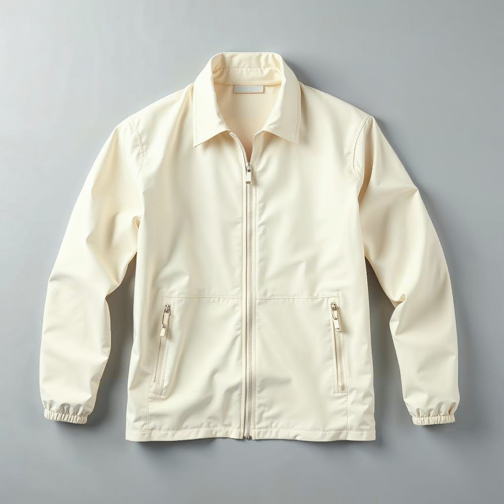
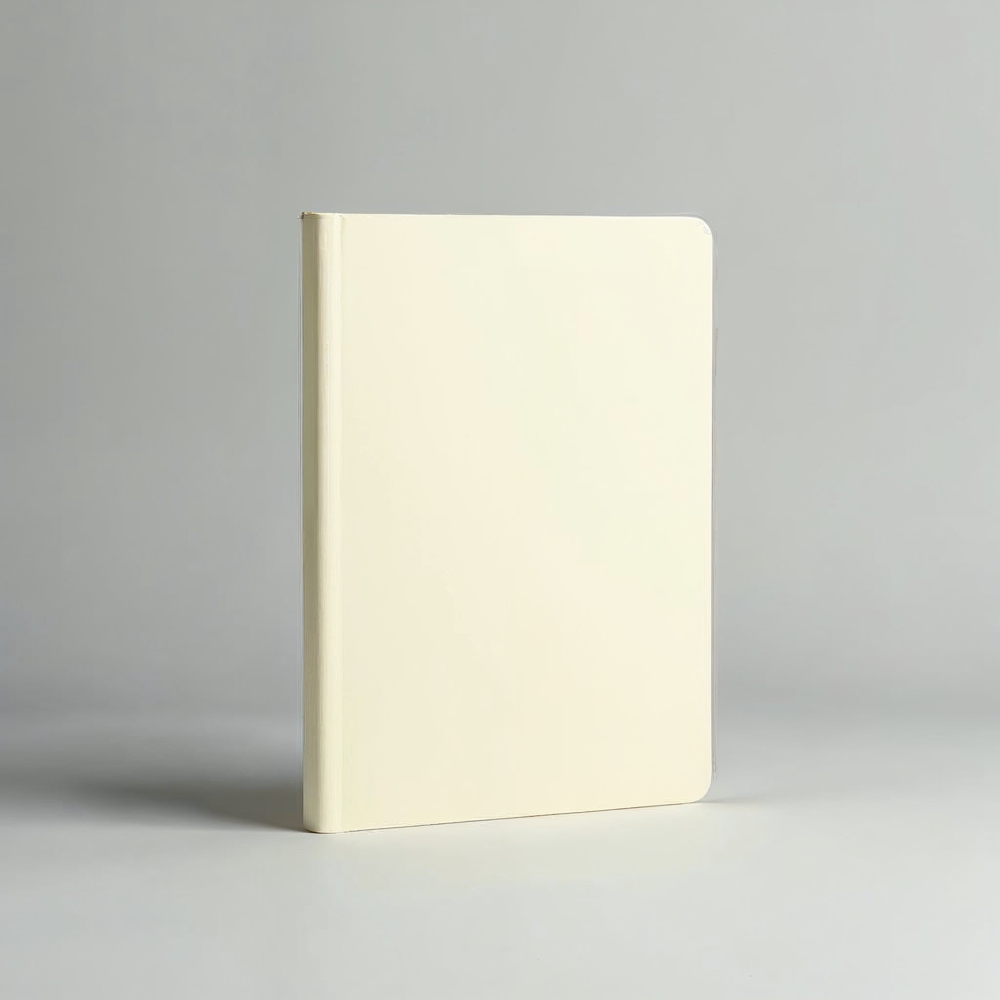
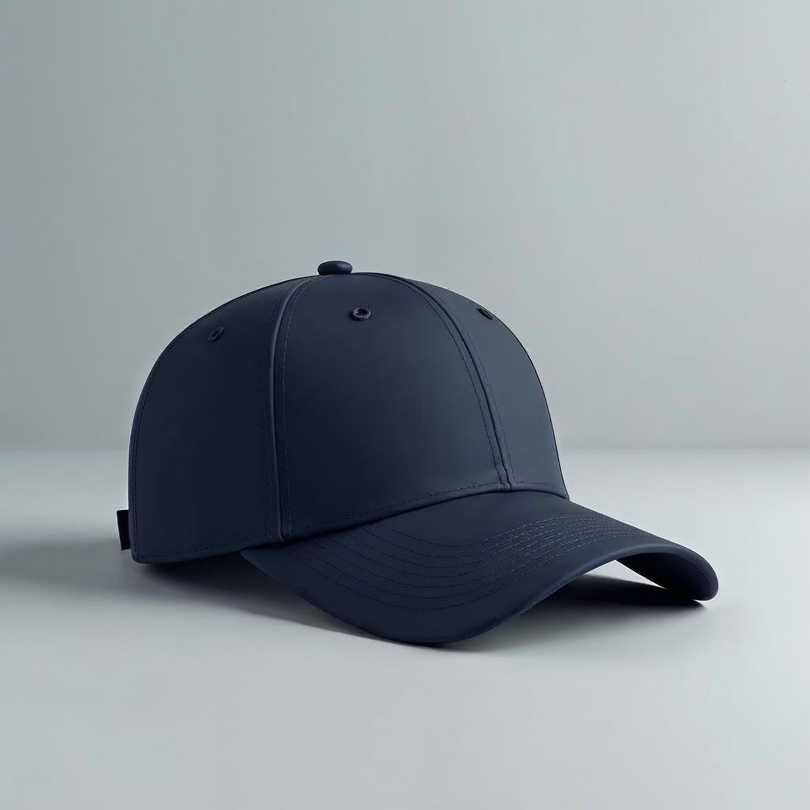

Equipamiento de terreno
No es merchandising
Landera no regala stickers ni botellas de evento. Lo que lleva marca es lo que se usa en terreno: la chaqueta, la gorra y la libreta de campo.
Las reglas
1 · Bordado a una tinta, no policromo. El isotipo a cuatro colores no sobrevive al hilo.
2 · En prenda va el isotipo solo o el bloqueo chico al pecho, nunca un logo grande a la espalda.
3 · Prenda crema o tinta. Nada de verde saturado: el verde es de la marca, no del textil.
La bajada que va en terreno es Gestión Agrícola.
Lo que lleva marca

Chaqueta — isotipo bordado al pecho

Libreta de campo — bloqueo a una tinta

Gorra — isotipo en crema sobre tinta
Cómo va el bordado
Una tinta, verde o tinta. El policromo no se borda: cuatro colores en hilo se empastan.
⚠ Soportes de referencia generados — reemplazar por muestras reales al cotizar